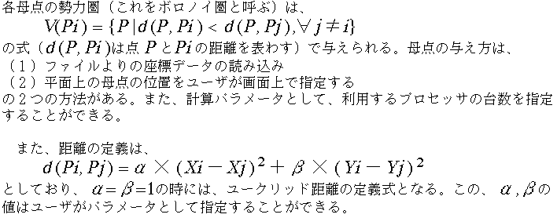

（２０）ボロノイ図作成支援プログラム
マ シ ン：Multi-PSI
環 境：PIMOS
言 語：GDCC
ソース量：260 KB
文 書：マニュアル (日本語)
概要
計算幾何学で重要かつ応用範囲の広いボロノイ図を生成する、並列制約論理型
言語ＧＤＣＣで記述されたプログラム。
特徴
本プログラムは、計算幾何学上重要な概念であり、かつ応用分野の広いデータ
構造であるボロノイ図を生成するものである。本プログラムの計算アルゴリズ
ムは現在知られている最も効率の良い逐次型のボロノイ図作成アルゴリズムと
同じ、平均でほぼＯ（Ｎ）（Ｎは与えられた母点の数）の計算オーダーである。
また、本アルゴリズムは並列度が高く、非常によい台数効果が得られる。
機能
本プログラムは、平面上に与えられた母点のデータより、各母点の勢力圏を表
すボロノイ図を生成するプログラムであり、並列制約論理型言語ＧＤＣＣを用
いて記述されており、Ｍｕｌｔｉ−ＰＳＩ上で実行される。

ＦＴＰ
- ボロノイ図作成支援プログラム [96K]

www-admin@icot.or.jp